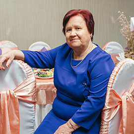
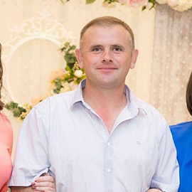
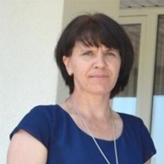
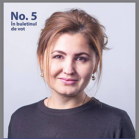

Gotca Valentina
Director
Director al scolii primare. Casatorita. Locuieste in satul Hirbovat.

Purice Iurii
Consilier
A învăţat la Ion Creanga. Casatorit. Profesor de educatie fizica.

Zmeu Elena
Director Liceu
Casatorita, locuieste in Hirbovat. Directoarea gimnaziului si a liceului satului.

Rodica MunteanCroitor
Primar
Propriul angajat.
A studiat Fiscalitate si administrare financiara la ASEM.
A învăţat la Liceu/ASEM.
Trăieşte în Anenii Noi.
Din Anenii Noi.
Căsătorită